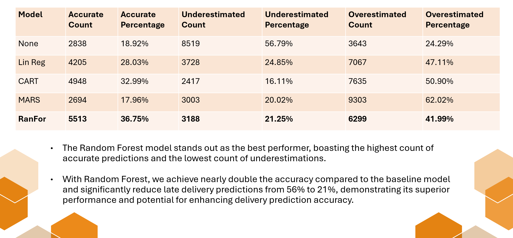

Enhancing Ecommerce Delivery Operations Through Predictive Analytics
Leveraging Machine Learning for Improved Delivery Efficiency and Accuracy

Course: BC2407 Analytics II, Grade obtained: A+
Project Overview
Objective: Enhance Shopee's delivery operations through machine learning predictive analytics.
Approach: Data preparation, cleaning, trend exploration, and evaluation of models (Linear Regression, CART, MARS, Random Forest).
Findings: Random Forest demonstrated the highest accuracy for forecasting delivery times and predicting potential delays.
Recommendations: Integrate predictive capabilities into Shopee's app for better delivery estimates and develop a real-time dashboard to address delivery issues proactively.
Impact: Improved customer satisfaction, reduced delivery anxiety, and enhanced operational efficiency.
Problem Statement
Our team aims to leverage analytics to address the challenge of late deliveries in Shopee through predicting the risk of late delivery and the predicted days required to deliver. By doing so, this enables Shopee to enhance customer satisfaction, optimize operational efficiency, and gain a competitive edge in the market.
Data Preparation, Cleaning, and Exploration
Data Source: Kaggle dataset with 52 features and 180,519 deliveries.
Cleaning: Removed irrelevant and redundant variables, handled location and personal information, and formatted date data.
Exploration: Identified high late delivery rates (54.82%), inconsistent delivery schedules, and uniform late delivery rates across regions and product departments.
Model Training and Evaluation
Train-Test Split: 70% training, 30% testing.
Models Used:
- Linear Regression: Predicts delivery days; evaluated for multicollinearity and accuracy.
- CART (Classification and Regression Trees): Provides interpretable results; pruned to avoid overfitting.
- MARS (Multivariate Adaptive Regression Splines): Captures complex relationships; pruned to balance complexity and accuracy.
- Random Forest: Aggregates multiple trees; robust model with error rates stabilized at 200 trees.
Evaluation of Model Performance
Metrics for Comparison: Traditional metrics like R-squared, RMSE, and MAE might not be suitable due to the discrete nature of delivery days. A new metric was developed to assess prediction accuracy by evaluating underestimation and overestimation after a ceiling operation on predicted values.
Model Performance Summary:
- Random Forest: Best performing with highest accuracy (36.75%) and lowest underestimation rate.
- CART: Good performance but with higher underestimation compared to Random Forest.
- Logistic Regression: Lower accuracy and higher error rates compared to Random Forest and CART.
- MARS: Not performing as well as other models in terms of accuracy.
Business Applications
Recommendations:
- Predicting Delivery Days: Integrate the model into the e-commerce app to improve delivery estimates and customer satisfaction.
- Predicting Late Orders: Implement a dashboard for real-time monitoring and continuous improvement.
Variable Importance Analysis:
- Focus on optimizing supply chain for critical locations (Order Region, Customer State).
- Prepare for peak periods by adjusting inventory and staffing (Month, Weekday).
- Shipping mode adjustments based on performance evaluations.
Limitations:
- High implementation costs and potential for resource strain.
- Lack of detailed inventory and delivery process data.
- Impact of global events not accounted for in the model.
Conclusion
Machine learning models, particularly Random Forest, offer valuable insights for improving delivery performance. Future enhancements could include tracking additional variables and exploring other predictive applications to drive business growth.
Acknowledgments
This project, including its report, script, and presentation, was developed solely as a Proof of Concept for academic purposes under the course BC2407 at Nanyang Technological University Business School. It was presented internally to the course lecturer and is not affiliated with or endorsed by Shopee or any commercial entities. All analyses, predictions, and recommendations are hypothetical and for educational purposes only.